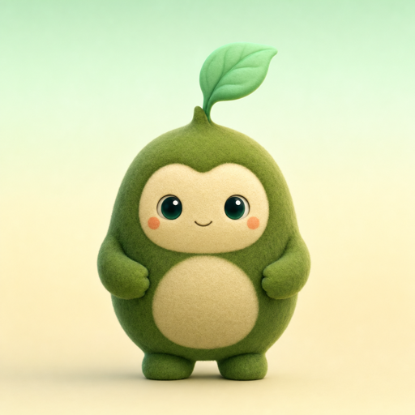

sproutfamily mode

A calmer way to watch
Give little viewers a pause button.
Sprout can pause a YouTube video when a parent should take a look. You stay in control of every choice.
You can change these settings any time from the Sprout icon.
Your family setting
Ages 3–5
Protection is off
On this YouTube page
No video open
Open a video to see its protection status here.
Your child asked for help with this video.
Preview example · no model resultWatching profileProtection is tuned for this age range.
Preview the experience
Sample states help the team demo the flow. They are not model predictions.